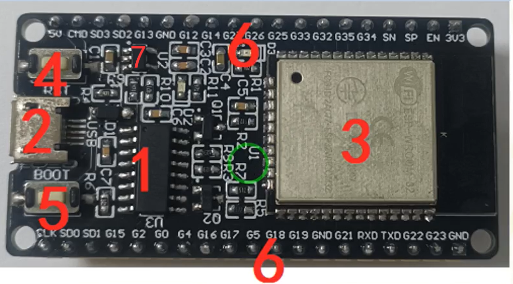
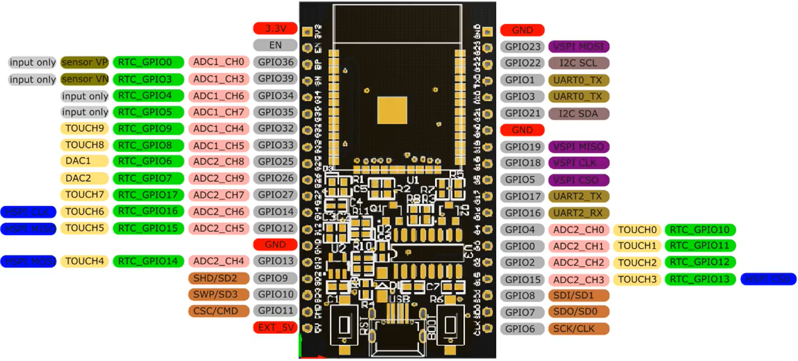
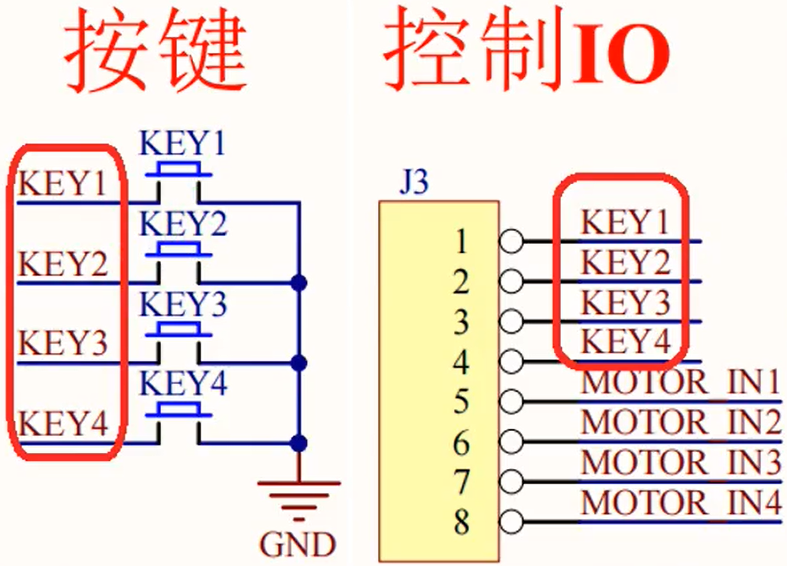

一、MicroPython
1.1 优缺点
- 优点
- 语法跟 Python3 基本一致
- 解释性语言，逐条执行，可随时查看变量信息，在单片机上调试方便
- 单片机逻辑控制越来越复杂，变化越来越多，高级脚本语言开发成本更低、迭代效率更高
- 单片机性能越来越高，在逻辑控制时，不再斤斤计较于一点性能
- 缺点
- 不能对底层进行操作
1.2 常用语法
1.2.1 Pin 对象
1.2.1.1 创建 $Pin$ 对象
'''
构造函数参数取值
id : 引脚编号
mode : 输入输出方式，可选值为 Pin.IN Pin.OUT
pull : 上下拉电阻配置，可选值为 Pin.PULL_UP Pin.PULL_DOWN
'''
from machine import Pin
p0 = Pin(id, mode, pull)1.2.1.2 读取电平状态
- 当 $Pin$ 对象 $mode$ 被设置为 $Pin.IN$ ，输入状态，使用获取引脚电平状态
p0.value() # 获取 p0 引脚电平状态，1为高电平，0为低电平1.2.1.3 设置电平状态
- 当 $Pin$ 对象 $mode$ 为 $Pin.OUT$ ，输出状态，可设置引脚电平状态
# 方法一
p0.value(x) # x=0低电平，x=1高电平
# 方法二
p0.on() # 高电平
p0.off() # 低电平1.2.1.4 中断
# handler : 中断执行的回调函数
# trigger : 触发中断的方式 Pin.IRQ_FALLING、Pin.IRQ_RISING
# Pin.IRQ_LOW_LEVEL、Pin.IRQ_HIGH_LEVEL
# 注意：对于handler函数，要将对应的Pin对象传入参数表，即 def handler(p0)
p0.irq(handler, trigger)1.2.2 time 对象
1.2.2.1 延时
import time
time.sleep(1) # 延时1s
time.sleep_ms(500) # 延时500ms
time.sleep_us(500) # 延时500us1.2.2.2 时间差
start = time.ticks_ms() # 获取ms计时器开始时间
# 计算并获取时间差
delta = time.tick_diff(time.ticks_ms(), start)二、ESP32开发板
2.1 资源模块
| 编号 | 模块资源 |
|---|---|
| 1 | CH340模块：用于USB转串口与ESP32对接 |
| 2 | MicroUSB接口：用于程序下载、固件升级、电源输入等 |
| 3 | ESP32-WROOM-32模组 |
| 4 | 复位按键 |
| 5 | BOOT按键 |
| 6 | ESP32模组引出GPIO引脚 |
| 7 | 稳压芯片：将MicroUSB输入的 5V 电压转换到ESP32模组适用的 3.3V |
2.2 GPIO引脚
- 具体哪些引脚不能使用，可参考ESP32引脚参考 - lnsane-G - 博客园 (cnblogs.com)或者ESP32 – GPIO 引脚参考大全 – 凌顺实验室 (lingshunlab.com)
三、例程
3.1 LED
3.1.1 例程目的
- $LED$ 流水灯
3.1.2 硬件电路
- 硬件电路由 $LED$ 模块、$ESP32$ 、若干导线连接组成
- 该 $LED$ 模块中， $RP1$ 和 $RP2$ 为限流电阻，防止电流超过二极管最大工作电流
3.1.3 实现思路
- 实现思路：使用 $ESP32 \quad GPIO$ 接入 $J1$ 端子，使引脚输出高低电平，以实现对 $LED$ 亮灭的控制
3.1.4 实现代码
from machine import Pin
import time
ids = [15, 2, 0, 4, 16, 17, 5, 18] # 使用的GPIO引脚编号
leds = [] # 存储控制LED的Pin引脚对象
for id in ids:
leds.append(Pin(id, Pin.OUT))
# leds 依次亮/灭
def ledOnOrOff(ledValue, sleepTime):
for led in leds:
led.value(ledValue)
time.sleep_ms(sleepTime)
if __name__ == "__main__":
time.sleep(2)
# 流水灯
while True:
ledOnOrOff(ledValue = 1, sleepTime = 50)
ledOnOrOff(ledValue = 0, sleepTime = 50)
3.2 蜂鸣器
- 有源蜂鸣器：与 $LED$ 类似，通电就会发出声音
- 无源蜂鸣器：需要一定频率的脉冲才能发出声音，即需要 $GPIO$ 引脚周期性输出高低电平
- 最佳发声频率在 $1.5KHz - 5KHz$
- 改变脉冲信号的频率和占空比可改变声音的音调和音量
3.2.1 例程目的
- 控制板载无源蜂鸣器音调由低到高
3.2.2 硬件电路
- 硬件电路由蜂鸣器模块、$ESP32$ 、若干导线连接组成
- 对于蜂鸣器，如果直接使用 $GPIO$ 进行控制，对电流的消耗较大，可能就会导致其他的外设资源得到的电流较小不能正常工作，所以一般对于功率较大的外设，都会增加一个驱动电路。这里蜂鸣器使用的驱动电路是 $ULN2003D$ 电机模块
- 对于 $ULN2003D$ ，输入引脚输入高电平，对应输出引脚输出低电平；输入低电平，输出高阻态，当输出端接了上拉电阻，输出端为高电平
3.2.3 实现思路
- 将 $GPIO$ 接入 $J2$ 端子 $BEEP$ 引脚，通过控制该 $GPIO$ 输出高低电平实现蜂鸣器发声
3.2.4 实现代码
from machine import Pin
import time
beep = Pin(15, Pin.OUT) # 控制蜂鸣器引脚
# 蜂鸣器发声，参数表(高电平所占时间ms，一个周期电平时长ms，发声时长ms)
def beepVoice(highTime = 250, periodTime = 500, beepTime = 1000):
start = time.ticks_ms()
while True:
delta = time.ticks_ms() - start # 获取时间差
if (delta <= beepTime):
# 脉冲频率：1s / (periodTime us)，默认周期电平时长500us，即频率2KHz
# 占空比：highTime / periodTime ,默认为50%
beep.value(1)
time.sleep_us(highTime)
beep.value(0)
time.sleep_us(periodTime - highTime)
else:
return
if __name__ == "__main__":
highTimes = range(50, 500, 50) # 高电平时长
beepTimes = [1000 for _ in range(len(highTimes))] # 发声时长
for highTime, beepTime in zip(highTimes, beepTimes):
beepVoice(highTime = highTime, beepTime = beepTime)
3.3 直流电机
- 两引脚没有正负之分（由于扇叶本身结构，扇叶煽动的气流走向会随电机正反转发生同步反转），通电就开始工作，工作原理图如下
- 在允许范围内，电压越大转速越快，可用 $PWM$ 进行调速
3.3.1 例程目的
- 控制直流电机逐渐加速旋转
3.3.2 硬件电路
- 硬件电路由 $5V$ 直流电机、$ULN2003D$ 电机驱动模块、$ESP32$ 、若干导线连接组成
- 与蜂鸣器一样，$5V$ 直流电机电流消耗较大，所以使用驱动模块进行驱动
3.3.3 实现思路
- 直流电机一端接 $J5$ 端子 $VCC$ 引脚，另一端接一个 $J5$ 端子的 $OUT$ 引脚，对应该引脚，将 $GPIO$ 引脚接到 $J3$ 端子的引脚。由于电机有一端接入了 $5V$ 电压，所以 $J5$ 的 $OUT$ 引脚应该输入低电平，也即 $ULN2003D$ 驱动对应引脚要输入高电平，即可实现对电机的控制
- 为避免线路连接好电机就转动，根据 $ULN2003D$ 输入输出特性、电机一端已经接入了 $5V$ 电压、电机未接上拉电阻，所以得让 $J5$ 端子 $OUT$ 引脚置为高阻态，即线路的入口 $GPIO$ 配置为下拉状态 $Pin.PULL_DOWN$ 保证输入为低电平
- 对于转速，控制 $GPIO$ 输出的电压占空比即可实现转速的调节
3.3.4 实现代码
from machine import Pin
import time
motor = Pin(15, Pin.OUT, Pin.PULL_DOWN)
# 套用蜂鸣器函数 beepVoice()
def motorSpeed(highTime = 250, periodTime = 500, motorTime = 2000):
start = time.ticks_ms()
while True:
delta = time.ticks_ms() - start
if (delta <= motorTime):
motor.value(1)
time.sleep_us(highTime)
motor.value(0)
time.sleep_us(periodTime - highTime)
else:
return
if __name__ == "__main__":
highTimes = range(300, 550, 50) # 测试发现5V直流电机，以50为步长，占空比至少得为60%才能启动
for highTime in highTimes:
motorSpeed(highTime)3.4 按键开关
- 按下后松开手指，按键会自动抬起，机械开关在按下抬起过程中均有一个抖动的情况
- 消抖，过滤震荡波
- 硬件消抖，接入一个 $RC$ 电路
- 软件滤波，通过在程序中延时，跳过震荡波
3.4.1 例程目的
- 按键控制直流电机加速、减速、开启、停止，理解 $Pin.IN$
3.4.2 硬件电路
- 硬件电路由按键模块、 $5V$ 直流电机、$ULN2003D$ 电机驱动模块、$ESP32$、若干导线组成
- 其中按键模块电路及电机驱动模块分别如下

3.4.3 实现思路
- 配置 $4$ 个 $GPIO \quad mode$ 为 $Pin.IN$ ，以监听开关按键是否被按下
- 配置 $1$ 个 $GPIO \quad mode$ 为 $Pin.OUT$ ，对直流电机进行启停加减速控制
3.4.4 实现代码
- button.py
- 监测按键状态
from machine import Pin
import time
class ButtonScan:
keys_ID = [] # 存放按键引脚编号
keys = [] # 存放按键对象
flag = 1 # 标记按键开关状态
# 获取按键引脚
def __init__(self, keys_ID):
self.keys_ID = keys_ID
for key_ID in self.keys_ID:
self.keys.append(Pin(key_ID, Pin.IN, Pin.PULL_UP)) # 因为按键接地，所有Pin.IN引脚设置默认状态为上拉高电平
self.flag = 1;
# 获取按键按下信息
def getKey(self):
# 当flag为1，有任一开关被按下，获取该开关引脚对象
if self.flag == 1 and any(key.value() == 0 for key in self.keys):
time.sleep_ms(10)
self.flag = 0
for index, key in enumerate(self.keys):
if key.value() == 0:
return index
# 当所有开关都弹起的时候，置flag为1，等待下次开关按下
elif all(key.value() == 1 for key in self.keys):
self.flag = 1
return None
if __name__ == "__main__":
keys_ID = [14, 27, 26]
demo = ButtonScan(keys_ID)
print(demo.keys_ID)
motor = Pin(15, Pin.OUT)
while True:
k = demo.getKey()
if k != None:
if keys_ID[k] == 14:
motor.value(1)
elif keys_ID[k] == 27:
motor.value(0)- main.py
- 导入 $button.py$ 中的 $ButtonScan$ 类，进行按键监测并控制电机的启停加减速
from machine import Pin
import time
from buttons import ButtonScan
motor = Pin(15, Pin.OUT, Pin.PULL_DOWN) # 直流电机引脚
keys_ID = [14, 27, 26, 25] # 按键引脚编号
highTime = 300 # 加减速默认开始脉冲时长300ms，周期为500ms，占空比60%
# 设定占空比以调节转速
def motorSpeed(highTime = 250, periodTime = 500, motorTime = 3000):
start = time.ticks_ms()
while True:
delta = time.ticks_ms() - start
if (delta <= motorTime):
motor.value(1)
time.sleep_us(highTime)
motor.value(0)
time.sleep_us(periodTime - highTime)
else:
return
def keyFunc(k):
global highTime
if keys_ID[k] == 14:
print(highTime)
motorSpeed(highTime)
highTime += 50
if highTime > 500:
highTime = 500
elif keys_ID[k] == 27:
print(highTime)
motorSpeed(highTime)
highTime -= 50
if highTime < 300:
highTime = 300
elif keys_ID[k] == 26:
motor.value(1)
elif keys_ID[k] == 25:
motor.value(0)
if __name__ == "__main__":
demo = ButtonScan(keys_ID)
while True:
k = demo.getKey()
if k != None:
keyFunc(k)
3.5 步进电机
- 将电脉冲信号转换为角位移/线位移，是一种开环控制元件
- 工作原理
- $28BYJ48$ 五相四线步进电机工作参数
- 重点关注电压、步进角度、减速比
3.5.1 例程目的
- 按键控制 $28BYJ48$ 步进电机加速减速正反转停止
3.5.2 硬件电路
- 五相四线步进电机 $28BYJ48$ 、$ULN2003$ 驱动模块、按键模块、$ESP32$ 、杜邦线若干
3.5.3 实现思路
将 $28BYJ48$ 接到 $J5$ 端子上
使用 $buttons.py$ 中的 $ButtonScan$ 获取按键信息，进而实现启停正反转加减速的控制
3.5.4 实现代码
- 调用 $ButtonScan$ 对象
from machine import Pin
import time
from buttons import ButtonScan
motorIDs = [15, 2, 0, 4] # 步进电机引脚编号
motor = [] # 存储步进电机引脚对象
for motorID in motorIDs:
motor.append(Pin(motorID, Pin.OUT, Pin.PULL_DOWN))
keys_ID = [14, 27, 26, 25] # 按键编号
speed = 1 # 延时ms，延时越短速度越快，反之越慢，speed取值设置为1-5
speed_min = 1
speed_max = 5
# 步进电机旋转步序
turns = [[1,0,0,0],
[1,1,0,0],
[0,1,0,0],
[0,1,1,0],
[0,0,1,0],
[0,0,1,1],
[0,0,0,1],
[1,0,0,1]]
# 设定步进电机正反转加减速
def keyFunc(direc, speed):
for turn in turns[::direc]:
for i in range(4):
motor[i].value(turn[i])
time.sleep_ms(speed)
if __name__ == "__main__":
demo = ButtonScan(keys_ID)
k = None
direc = 1
speed = 1
on = False
while True:
k = demo.getKey() # 返回按键索引值
if k != None:
# 正反转
if keys_ID[k] == 14:
direc = 1
on = not on
elif keys_ID[k] == 27:
direc = -1
on = not on
# 加减速
elif keys_ID[k] == 26:
speed += 1
if speed > speed_max:
speed = speed_max
elif keys_ID[k] == 25:
speed -= 1
if speed < speed_min:
speed = speed_min
if on: # 开启步进电机，执行旋转步序
keyFunc(direc, speed)
3.6 中断
- 外部中断：上升沿、下降沿、低电平、高电平触发模式

- 定时器中断